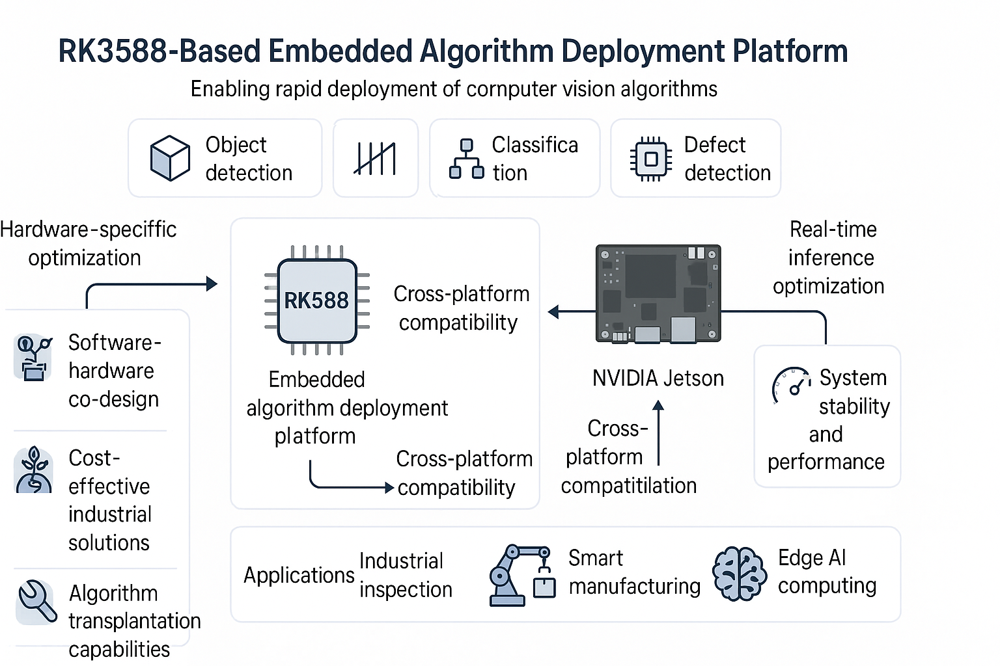

Figure 1: System architecture of our RK3588 algorithm rapid deployment platform. The platform supports multiple algorithm types including object detection, counting, adaptive detection bounding boxes, classification, and defect detection, deployed on RK series embedded platforms and Jetson platforms.
本项目是一个基于嵌入式的算法通用平台，旨在将包括目标检测、计数、检测范围框自适应、分类、缺陷检测等算法部署在RK系列嵌入式平台上以及Jetson平台上。通过低成本化工控的方式降低了智能相机的使用门槛，为工业应用提供了经济高效的解决方案。
作为全栈设计师，我负责算法的重新设计和优化，以适应嵌入式设备的硬件限制。同时负责整体软硬件架构设计，并指导硬件工程师完成相关开发工作。项目采用跨部门团队协作模式，包括软件工程师、硬件工程师和质量保证专家，确保项目目标的实现。
平台的核心技术包括嵌入式算法优化（针对RK系列和Jetson平台的算法适配和性能优化）、多算法类型支持（目标检测、分类、缺陷检测等）、软硬件协同设计（算法与硬件的深度集成优化），以及低成本工业控制解决方案（降低智能相机使用门槛）。
系统支持RK系列嵌入式平台和NVIDIA Jetson平台，实现了算法的高效部署和实时推理，为工业检测、智能制造等领域提供了可靠的技术支撑。通过算法优化和平台适配，显著降低了客户的硬件成本，提高了系统的可靠性和稳定性。
我们开发了一个基于嵌入式的算法通用平台，支持将目标检测、分类、缺陷检测等多种算法部署在RK系列嵌入式平台和Jetson平台上。通过算法优化和软硬件协同设计，显著降低了智能相机的使用门槛，为客户提供了经济高效的工业检测解决方案。项目实现了算法的高效移植和系统稳定运行，得到了客户的认可，具有良好的商业前景。